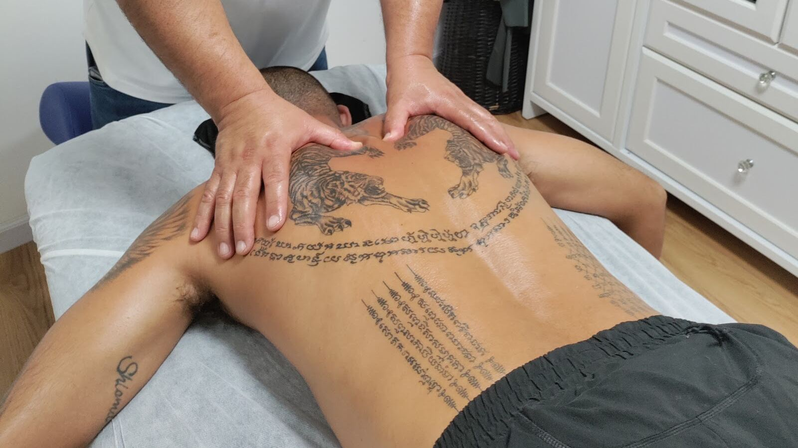
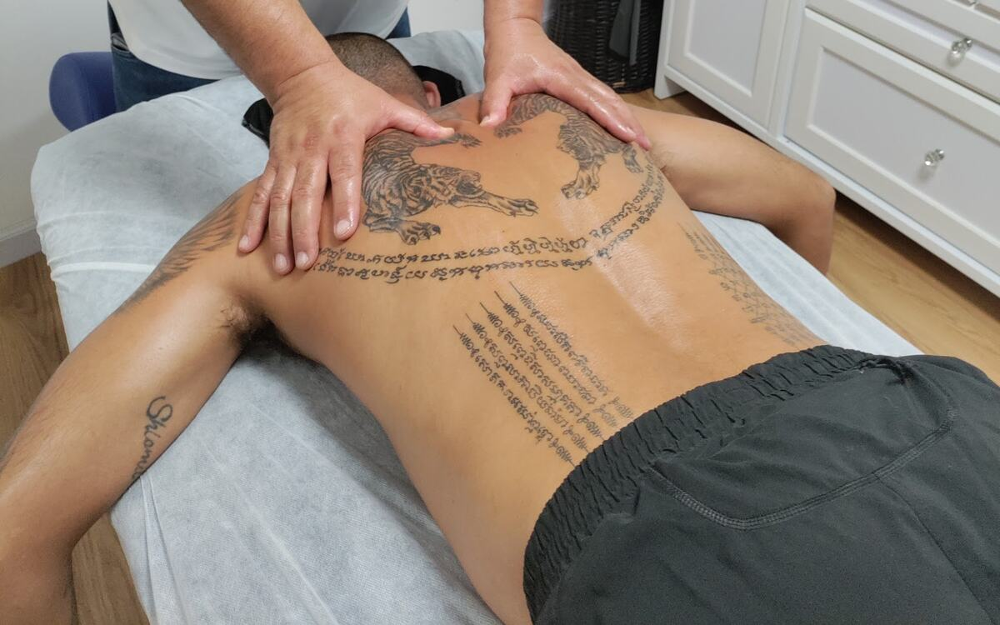
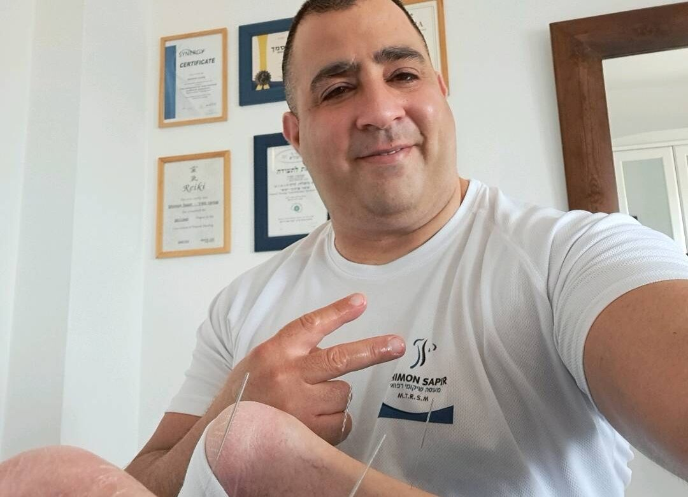

החשמונאים 45 · קרית מוצקין
עיסוי, כוסות רוח ודיקור, בחדר הטיפולים של עיסוי בקריות שמעון ספיר.Massage, cupping and needling in the treatment room of Shimon Sapir Massage in the Krayot.
שמעון ספירShimon Sapir
מעסה מהקריותA masseur of the Krayot
שמעון ספיר עובד בחדר טיפולים משלו ברחוב החשמונאים בקרית מוצקין, ראשון עד שישי.Shimon Sapir works from his own treatment room on HaHashmonaim Street in Kiryat Motzkin, Sunday to Friday.
- דירוג בגוגלGoogle rating
- ביקורותReviews
- היוםToday
- כתובתAddress
- החשמונאים 4545 HaHashmonaim
בחדר של שמעוןIn Shimon’s room
כתבו לשמעוןMessage Shimon
בוחרים טיפול, מסמנים על הגב, ושולחים.Pick a treatment, mark the back, send.
- איזה טיפולWhich treatment
- איפה העומסWhere it’s tight
- מתי נוחWhen suits you
- שולחים בוואטסאפSend on WhatsApp

געו בגב כדי להניח כוסTap the back to place a cup
אל שמעון · 052-541-7858To Shimon · 052-541-7858
שליחה בוואטסאפSend on WhatsApp
עשיתי מסאז׳ אצל שמעון והייתה חוויה מעולה. הוא מקצועי, קשוב ויודע בדיוק איפה צריך לעבוד כדי לשחרר עומסים. ממליץ בחום לכל מי שמחפש טיפול איכותי ואווירה נעימה.
I had a massage with Shimon and it was a great experience. He’s professional, attentive and knows exactly where to work to release tension. I warmly recommend him to anyone looking for quality treatment and a pleasant atmosphere.
טיפול מהטובים והאיכותיים שקיבלתי בחיי! מרגישים את הידע הרחב והמקצועיות תוך כדי רגישות מלאה והקשבה.
One of the best, highest-quality treatments I’ve had in my life! You can feel the broad knowledge and professionalism, with full sensitivity and attentiveness.
נהניתי מכל רגע , שמעון מקצועי אכפתי ויודע לגעת בנקודות הנכונות
בהחלט אחזור אליו בהמשך
מומלץ מאוד !!I enjoyed every moment. Shimon is professional, caring and knows how to touch the right spots. I’ll definitely go back to him. Highly recommended!!
ביקורות 5 כוכבים מגוגל, מצוטטות כלשונן.5-star Google reviews, translated from Hebrew.
לפני שמגיעיםBefore you come
- החשמונאים 45, קרית מוצקין45 HaHashmonaim St, Kiryat Motzkin
מה עושים אצל שמעון?What does Shimon do?
בתמונות מחדר הטיפולים רואים עיסוי, כוסות רוח ודיקור. מה מתאים לכם? אפשר לשאול את שמעון בהודעה.His photos from the treatment room show massage, cupping and needling. Not sure which suits you? Ask Shimon in a message.
מתי אפשר להגיע?When is he open?
ראשון עד חמישי 8:00–21:00, שישי 9:00–13:00. בשבת סגור.Sunday to Thursday 8:00–21:00, Friday 9:00–13:00. Closed on Saturday.
איך קובעים תור?How do I book?
בהודעת וואטסאפ או בשיחה למספר 052-541-7858.Send a WhatsApp message or call 052-541-7858.
איפה זה בדיוק?Where exactly is it?
רחוב החשמונאים 45 בקרית מוצקין. המפה נמצאת למטה.45 HaHashmonaim Street, Kiryat Motzkin. The map is just below.
בואו לחדרCome to the room
החשמונאים 45
קרית מוצקין45 HaHashmonaim St
Kiryat Motzkin